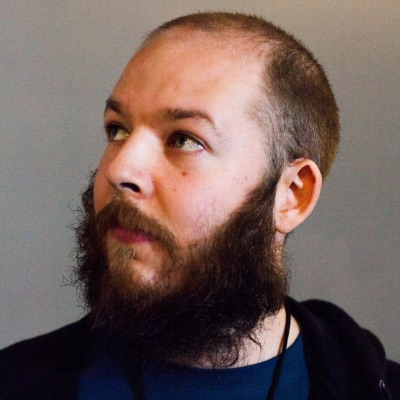

<section id="speakers" full-height="full-height"><div class="page-size"><h2>Speakers</h2><ul class="speakers-list"><div class='row'><li class="col-4"><div class="avatar-wrap"></div><h4>Danny Grander</h4><h5>Writing Secure Node Code</h5><a href="https://www.twitter.com/grander" target="_blank" class="twitter-handle">@grander</a></li><li class="col-4"><div class="avatar-wrap"></div><h4>Richard Rodger</h4><h5>Solving service discovery in Node.js with SWIM</h5><a href="https://www.twitter.com/rjrodger" target="_blank" class="twitter-handle">@rjrodger</a></li><li class="col-4"><div class="avatar-wrap"></div><h4>Peter Marton</h4><h5>Breaking down the monolith</h5><a href="https://www.twitter.com/slashdotpeter" target="_blank" class="twitter-handle">@slashdotpeter</a></li></div><div class='row'><li class="col-4"><div class="avatar-wrap"></div><h4>Jan Lehnardt</h4><h5>Kill all Humans, Development Tool Automation Like a Pro</h5><a href="https://www.twitter.com/janl" target="_blank" class="twitter-handle">@janl</a></li><li class="col-4"><div class="avatar-wrap"></div><h4>Mathias Buus</h4><h5>Peer-to-peer service architecture</h5><a href="https://www.twitter.com/mafintosh" target="_blank" class="twitter-handle">@mafintosh</a></li></ul><a href="/call-for-speakers" class="center more">CALL FOR SPEAKERS<div class="normal">are still open!</div></a></div></section>